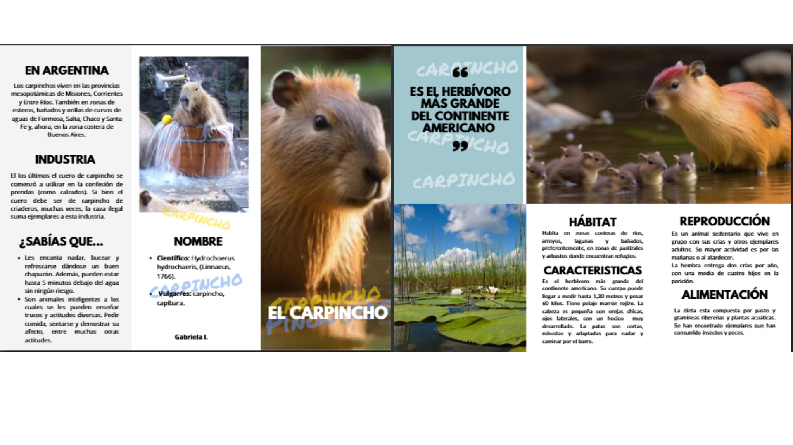

Aprende paso a paso cómo diseñar un folleto súper bonito en Microsoft Word sobre tu animal favorito.
¡Sigue los 6 pasos fáciles!
Busca el icono de Word en la barra de tareas, da un clic sobre él y selecciona Documento en blanco.
Ve a la pestaña arriba que dice Formato, presiona Orientación y elige Horizontal ↔️.
En esa misma pestaña de Formato, haz clic en la herramienta Columnas y selecciona la opción Tres.
Haz clic en la pestaña Diseño, busca a la derecha la opción Color de página y elige el color bonito que más te guste 🎨.
Entra a la página de enlaces de Interes (Animales) elige un animal y pega la información relevante.
Inserta imágenes de tu animal en cada sección.
